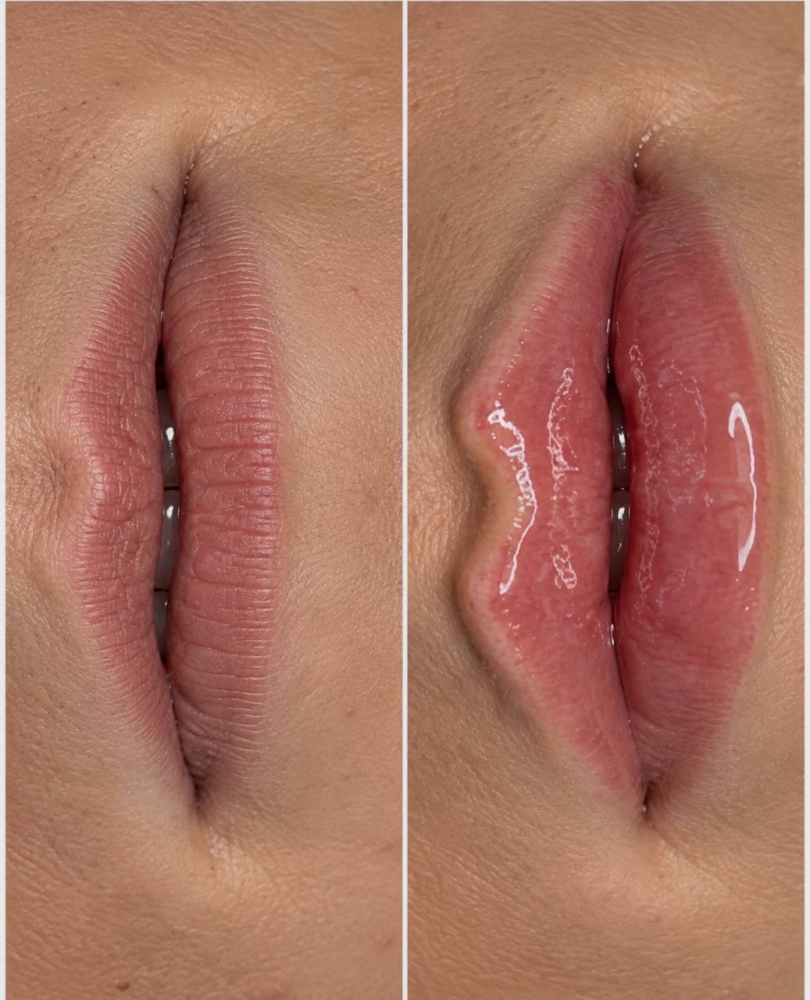

Wybrane zabiegi z mojego gabinetu w Krakowie – na czym polegały i dla kogo się sprawdzą.

Pierwsze modelowanie ust nie musi oznaczać dużej zmiany. Ten efekt pokazuje, że wystarczy delikatnie podkreślić to, co natura już dała.